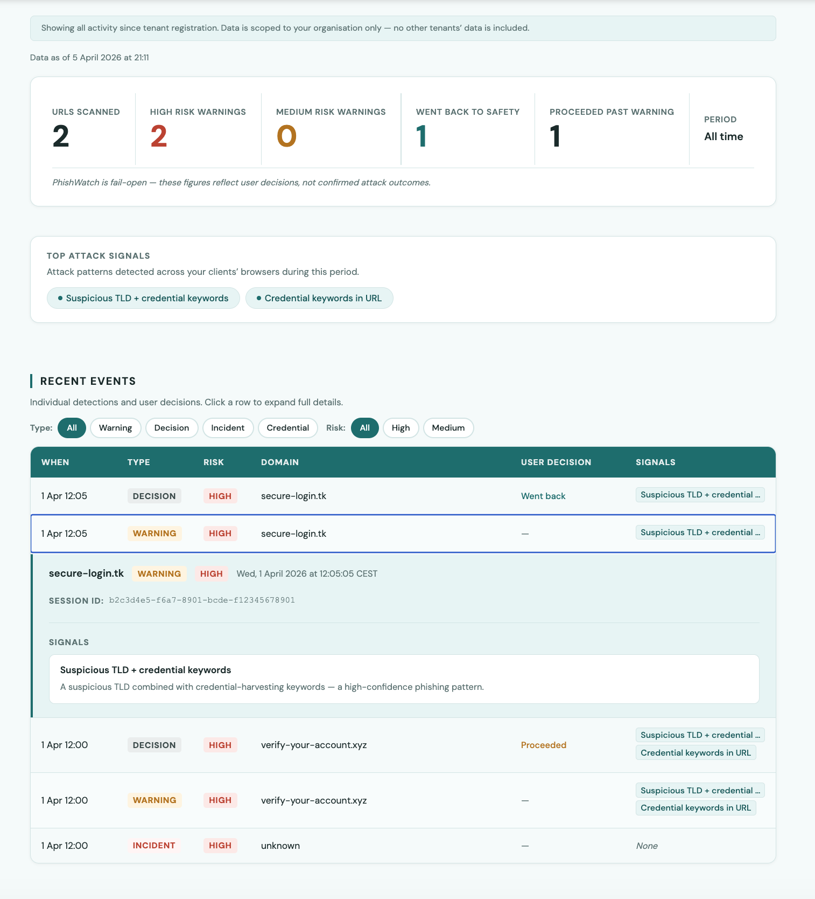

MSP Pilot — Berlin 2026
ClickFix, AiTM session hijacking, and Browser-in-the-Browser attacks activate inside the browser — after every email filter, every domain reputation check, and every endpoint tool has already passed the link as safe. PhishWatch intercepts at the browser layer, before credentials are exposed.
On this page
01 — The problem
Modern phishing does not arrive as a suspicious email with a malicious attachment. It arrives as a clean link — passing every filter — and activates inside the browser, at the moment the user interacts with it.
A webpage injects a malicious command into the user's clipboard and instructs them to paste it into PowerShell or Terminal. On Mac: curl | zsh, osascript, base64-encoded payloads. On Windows: PowerShell via the Run dialog.
A reverse proxy sits between the user and the real login page. The user completes MFA. The proxy captures the authenticated session cookie in real time. Used by Tycoon 2FA — 2,000+ operators before Europol and Microsoft dismantled it in March 2026.
A fake browser window rendered inside a web page using HTML and CSS. Looks exactly like a legitimate OAuth popup — complete with a convincing fake address bar. The browser's real security indicators are absent because there is no real popup.
Also detected by PhishWatch
Full threat library with technical detail → phishwatch.io/threats
02 — How it works
PhishWatch runs as a Chrome MV3 extension. When a user clicks a link, it intercepts the navigation and analyses what the page does — not what it looks like or what domain it is on.
Clipboard analysis, DOM scanning, redirect chain tracking, all 8 detection modules
Domain name only (not full URL), signal IDs and severity, anonymous session UUID
Passwords, form values, clipboard content, cookies, session tokens, page content
| Signal | What it detects | Severity | Where |
|---|---|---|---|
| mac_clickfix_lure | curl|zsh, osascript, base64 terminal commands injected into clipboard | HIGH | Extension |
| clickfix_copied_command_detected | Windows PowerShell / Run dialog command injection | HIGH | Extension |
| consentfix_oauth_paste_blocked | OAuth authorisation code pasted into a password field | HIGH | Extension |
| bitb_fake_window_detected | Fake browser window rendered in page DOM (BitB) | HIGH | Extension |
| treadmill_submit_window | Cross-origin POST during credential submission — AiTM relay signature | MEDIUM | Extension + Backend |
| cross_origin_credential_post | Credential form submitting to a domain that does not match the page | MEDIUM | Extension |
| typosquatting_detected | Lookalike domain — Levenshtein distance ≤ 2 vs 500+ known brands. Supporting heuristic — corroborates other signals. Not a browser-native mechanic. | HIGH/MED | Backend |
| newly_registered_domain | Domain age under 30 days via RDAP/WHOIS (no API key required — fails open) | MEDIUM | Backend |
Signals are deterministic — the same URL and browser mechanics always produce the same result. No black-box scoring. Every warning has an inspectable reason.
03 — Risk levels and decisions
Every URL is assessed and assigned a risk band. The band determines what the user sees and what is recorded in the dashboard.
Minor signals only — suspicious TLD, URL shortener, long query string. No strong indicator present. Navigation continues silently. Scan event recorded in dashboard.
Meaningful signals — cross-origin credential form, multiple redirects, newly registered domain, typosquatting match. Overlay appears explaining what was detected. User decides.
Strong signals — ClickFix command injection, BitB fake window, AiTM session relay. Overlay with specific explanation. If session incident conditions are met, webhook fires immediately.
As with any security tool, you may occasionally see a warning on a site you trust. The overlay always lets you proceed — PhishWatch never blocks. There is a one-click false positive report button in every warning. Every report goes directly to me and is reviewed the same day.
04 — The dashboard
Each MSP gets an isolated tenant dashboard. Data is scoped to your deployment — no other tenant's data is visible. Access it at any time during the pilot, not just at the end.

Every URL assessed across the deployment. Shows you how active the protection layer is relative to normal browsing volume.
Medium and high risk navigations that triggered an overlay. The gap between scans and warnings is your signal-to-noise ratio.
What users did when warned — went back, proceeded anyway, or reported as false positive. Each decision is timestamped and filterable.
Complete attack sequences — redirect chain followed by cross-origin credential form submission. The highest-severity finding. Webhook fires immediately when detected.
Filter by event type and risk band. Each row expands to show the full signal detail — which signals fired, their weights, and the risk score.
Dashboard access is via phishwatch.io/msp — you receive login credentials when you register. You can share access with colleagues or your client contact throughout the pilot.
05 — Deployment
PhishWatch deploys via Chrome managed policy. End users see nothing during setup — the extension installs silently and reads the tenant configuration automatically on next startup.
Email security@phishwatch.io with your company name to request a pilot access code. Tenant created within 24 hours.
Choose from Google Admin Console, Windows Group Policy, or RMM script. Extension installs silently on all enrolled devices. See the deployment guide below.
One JSON field in the policy scopes all telemetry to your client automatically. No extension reinstall. Picks up on next service worker startup.
Open your dashboard link. Scan events appear within minutes of the first browser navigation. Deployment confirmed.
Recommended for MSPs managing Google Workspace clients. Force-installs silently across all enrolled Chrome profiles.
Devices → Chrome → Apps & Extensions → Add by ID → Force install
Extension ID: odpemcfgjbgkkpklcfgcgaglmogjbghf
Policy JSON (under Managed configuration):
Save. Chrome deploys silently to all enrolled devices. No reinstall required. Policy applies on next service worker startup.
For Windows clients without Google Workspace. Uses Chrome's ExtensionSettings registry policy.
Computer Configuration → Administrative Templates → Google → Google Chrome → Extensions
Enable "Configure the list of force-installed extensions". Add: odpemcfgjbgkkpklcfgcgaglmogjbghf;https://clients2.google.com/service/update2/crx
Add an ExtensionSettings policy entry for the extension ID with "tenant_id": "your-client-name" in the managed configuration.
Run gpupdate /force or wait for next policy refresh.
For NinjaOne, Datto, ConnectWise Automate, Atera, or any RMM with PowerShell script deployment. One script covers all current and future managed devices.
The script sets the Chrome ExtensionInstallForcelist and ExtensionSettings registry keys with your tenant_id. Email [email protected] to request the ready-to-use script for your RMM platform.
Supports: NinjaOne, Datto RMM, ConnectWise Automate, Atera, Intune (Windows), Jamf (Mac via managed Chrome).
06 — Webhook integration
When PhishWatch detects a high-severity event, it fires a JSON webhook to any HTTPS endpoint you configure. Connects to ConnectWise, Jira, Slack, PagerDuty — anything that accepts a POST.
Events that trigger a webhook
Complete attack sequence detected — a redirect chain followed by a credential form submitting to a non-matching origin. Always HIGH risk. Contains: credential_post_origin, redirect_origins, elapsed_seconds.
Credential form detected whose action submits to a cross-origin domain. Risk band varies. Contains: form_action_domain, cross_origin_submit flag.
Setup takes 2 minutes via one API call:
Sample session_incident payload
nav_origin: "external_app" means the navigation originated from outside the browser — email client, Slack, Teams, WhatsApp. This is the classic phishing delivery pattern and significantly strengthens the incident signal.
Delivery: POST, 5-second timeout, User-Agent: PhishWatch/1.0. No retry on failure — use a relay if high availability is required.
07 — Data handling and compliance
PhishWatch is a security product. The data handling architecture is designed to be auditable, not just documented.
Who owns the data and what happens after the pilot
The MSP's telemetry data belongs to the MSP. PhishWatch processes it as a data processor under GDPR Art. 28 — the MSP is the controller. On request, all data for a tenant is deleted within 72 hours. At the end of the pilot, data is retained for 90 days then automatically deleted. There is no secondary use of data, no sale of data, and no aggregation that could identify an individual user.
Legal and compliance documents
Data Controller: the MSP (Partner). Data Processor: Deborshi Seal, an individual trading as PhishWatch, Berlin, Germany.
PhishWatch processes telemetry data generated by the Chrome extension deployed on the Partner's client devices. Processing consists of: receiving telemetry events, storing them in a Postgres database, making them available via the MSP dashboard API, and automatically deleting events older than 90 days.
Detection and analysis of browser-native phishing attack patterns for the purpose of protecting end users and providing the MSP with security visibility into their client deployments.
Employees and users of the MSP's client companies who use Chrome with the PhishWatch extension installed.
Anonymous session UUIDs (randomly generated, no link to any natural person), timestamps, and domain names visited. No names, email addresses, IP addresses (by default), or any other directly or indirectly identifying information is processed.
For the duration of the pilot agreement, plus the 90-day automatic retention period. Data is deleted within 72 hours of a written deletion request to [email protected].
Render Inc. (US) — managed Postgres database hosted in Frankfurt, Germany region. Render operates as a data processor under a data processing agreement.
Postgres encryption at rest (Render managed). TLS 1.2+ for all data in transit. Hashed API keys — plaintext never stored. Parameterised SQL throughout — no injection surface. Per-tenant data isolation enforced at query level. 90-day automatic retention with deletion on every deployment startup.
Given that no personally identifying data is processed (session UUIDs are random and cannot be linked to any individual without additional information held by the Controller), data subject rights under GDPR Art. 15–22 are satisfied structurally rather than procedurally. The Controller (MSP) retains full control over deletion via the deletion request process.
Chrome Manifest V3 with strict Content Security Policy. No eval, no remote code execution. Content scripts run in an isolated world — page JavaScript cannot access or modify extension logic. sanitizeClientSignals() validates all client-supplied data before use, preventing injection via malicious page content.
Parameterised SQL throughout — no SQL injection surface. Tenant API keys stored as SHA-256 hashes only — plaintext never persists. Timing-safe comparison (hmac.compare_digest) for access code validation. Per-IP rate limiting on all public endpoints. Request body size limit (64KB default). OpenAPI documentation endpoints disabled in production.
The extension transmits domain names and signal IDs only. URL paths, query parameters, page content, clipboard content, and credentials never leave the browser process. This is structural — the extension does not access this data for transmission purposes.
Backend hosted on Render (Frankfurt region). Postgres managed by Render with encryption at rest. All traffic over TLS 1.2+. No client IP addresses stored by default.
Security issues should be reported to [email protected]. Critical issues affecting deployed users will be patched and redeployed within 24 hours. Non-critical issues within 7 days.
This procedure covers security incidents affecting the PhishWatch platform — the backend API, telemetry database, and extension distribution. It does not cover incidents on MSP client devices, which remain the MSP's responsibility.
Incidents may be detected via: automated monitoring and alerting on the Render platform, security researcher disclosure to [email protected], or MSP partner report. All reports are acknowledged within 4 hours during business hours.
In the event of a personal data breach (noting that PhishWatch stores no directly identifying personal data), affected MSP partners will be notified within 72 hours of confirmation. Given the nature of the data processed (anonymous session UUIDs and domain names), the risk to data subjects from any breach is expected to be low.
[email protected] — for all security-related communications, vulnerability disclosures, and incident reports.
08 — Pilot terms
The pilot is entirely free. The goal is to establish whether PhishWatch adds value in a real MSP environment — for both sides.
Live deployment from the date the extension is installed on the first client device.
One client company deployed. We recommend a legal or accounting firm — highest risk environments for the attacks PhishWatch detects.
If it works, we discuss expanding to other clients. If not, remove the extension via the same policy used to install it — 5 minutes. No invoice.
What is included
How the pilot starts
Send a note to [email protected]. No form to fill in. We reply within one business day.
A short exchange to confirm: which client you will deploy to, that Chrome management is in place, and that telemetry will be enabled during the pilot.
A one-page document covering the terms above. Plain English, no legal complexity. Available at phishwatch.io/pilot-agreement.
Email security@phishwatch.io with your company name to request a pilot access code. Tenant created within 24 hours.
Dashboard shows live data throughout. False positives reviewed same day. We are reachable by email throughout.
Within 5 business days of the pilot ending, you receive a written report: scans performed, warnings shown, decisions made, session incidents (if any), false positives resolved.
09 — Frequently asked questions
Email us directly. We respond within one business day. No form, no demo request process — just an email.
Prefer a call? Book a 20-minute slot at cal.com/deborshi-seal-phishwatch/30min
Pilot agreement available at phishwatch.io/pilot-agreement